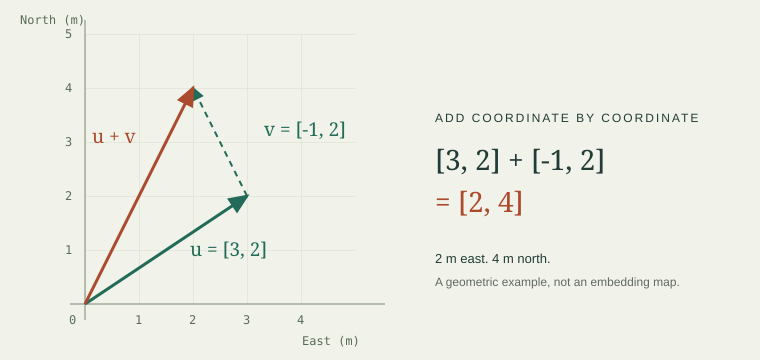
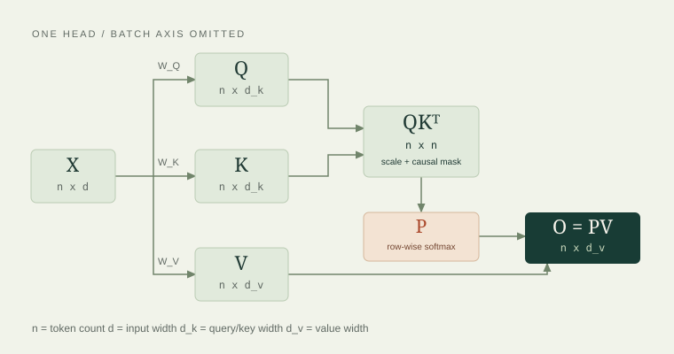

Part I / Mathematical foundations / 01
A language for representing information, transforming it, and deciding what to combine.
The question we are answering
A language model receives token IDs and produces scores for the next token. What mathematical objects carry the information between those two points?
Imagine building a search feature for a support center. Someone types, "I can't access my account." A useful result might say "Reset your sign-in credentials," even though the words differ. Exact string matching is not enough. We need a numerical representation that makes useful comparisons possible.
Linear algebra gives us ways to store and work with those numbers: vectors represent, matrices transform, and weighted sums combine. Training adjusts the numbers so these operations become useful for a task. Arithmetic alone does not give a model an understanding of language.
By the end, you will be able to trace tensor shapes through one attention head, distinguish similarity from dependence, and explain why a small low-rank update can adapt a large weight matrix.
You need arithmetic, not a previous mathematics course. A scalar is one number: 3 requests, a weight of -0.5, or a price of 2. A letter is a placeholder for a value. In 2x+1, substitute 3 for x, multiply first, then add: 2(3)+1=7. An equation states that two expressions have the same value; \approx means approximately equal.
Subscripts label entries, not multiplication: x_2 means entry 2 of x. Superscripts sometimes mean powers: 3^2=3(3)=9. But a superscript \top means transpose, not a power; we will spell out that operation. We count entries from 1 in mathematics even if your code indexes from 0. Bold lowercase letters denote vectors; uppercase letters denote matrices.
Start with a delivery robot. Its displacement could be 3 meters east and 2 meters north. The order matters: swapping the coordinates describes a different movement. A vector is an ordered list of numbers that we can add and scale under consistent rules.
\mathbf{x} is the vector; \mathbb{R}^{2} means two real-valued coordinates; \|\mathbf{x}\|_2 is its Euclidean length. A scalar is a single number, such as 2.
The symbol \in means "belongs to"; \mathbb R is the real number line, including negatives and fractions. A vector's dimension or width is its number of coordinates. We draw two coordinates as an arrow from the origin, the point [0,0]. A third coordinate adds another axis; 64 coordinates obey the same arithmetic without a literal 64-axis drawing.
Why the square root in the length formula? East and north form a right triangle. The Pythagorean rule says its squared diagonal length is 3^2+2^2=13. The square root selects the nonnegative length whose square is 13. This length is also called the Euclidean norm; the subscript 2 identifies the sum-of-squares choice. A zero vector has all coordinates zero and length zero.
The robot's coordinates have clear physical meanings. For a house, we might instead use area, number of rooms, and age, always in that order. These features use different units. Area values may be much larger than room counts, so area can dominate the calculated distance.
We can change each feature's scale before comparing houses. This is called feature scaling. We also choose a distance metric: the rule for measuring distance. Both choices affect what counts as close.
For example, compare house features [100,2] and [110,3], using area and rooms. The difference is [10,1], with squared length 10^2+1^2=101: the area coordinate supplies 100 of that total. Dividing every area by 10 changes the difference to [1,1] and squared length to 2. This feature scaling changes the relative influence of coordinates; neither mixed-feature score is automatically a physical distance or a universally correct comparison.
Worked example / Combine movements
The robot moves \mathbf{u}=[3,2]^\top, then \mathbf{v}=[-1,2]^\top. The superscript \top transposes a row into a column; we use column vectors for individual examples.
Add matching coordinates. Scaling by 2 doubles both coordinates; scaling by a negative number also reverses direction. In general, a\mathbf{u}+b\mathbf{v} is a linear combination, where a and b are scalar coefficients.
Write out the first calculation: [3+(-1),\,2+2]^\top=[2,4]^\top. Subtraction is addition of the negative: \mathbf u-\mathbf v=[3-(-1),\,2-2]^\top=[4,0]^\top. Its length, 4, is the distance between the two arrow tips. You cannot add a two-coordinate displacement to a three-coordinate one: there is no matching third entry.
Coefficients need not be equal or positive. For example, 2\mathbf u-\mathbf v=[6,4]^\top-[-1,2]^\top=[7,2]^\top.
All real two-coordinate vectors form a vector space. You can add any two of them or multiply one by any real scalar, and the result is still a real two-coordinate vector. More generally, a vector space is a collection with consistent addition and scaling rules of this kind. Staying inside the collection is called closure. It does not mean every sum is a useful language representation.

A model splits text into tokens, such as words or word pieces, and gives each token a numerical ID. An embedding lookup uses that ID to select a learned vector from a table. If a toy vocabulary contains 500 tokens and each embedding has 64 coordinates, its embedding table has shape 500\times64. The number of tokens and the number of coordinates are different quantities. "64-dimensional" means each vector has 64 entries; it does not mean the table has 64 vectors.
Actual learned coordinates generally do not come with labels like "royalty" or "happiness." Information can be distributed across many coordinates. Initial token embeddings are also different from the contextual hidden states produced as tokens pass through Transformer layers.
More coordinates give the model more numbers to adjust, not a fixed number of meanings. One coordinate can already take infinitely many real values. So "64 dimensions can store exactly 64 concepts" is wrong. The useful width depends on the task, training, and available computing resources.
Context also matters. The word "bank" can start with the same token embedding but receive different contextual states in a river sentence and a finance sentence.
Where the analogy stops
A 2D arrow is a visualization of arithmetic, not a map of language. Nearby learned vectors are only useful evidence of relatedness when the model, representation, and metric support that use. Arbitrarily adding two feature vectors does not guarantee a meaningful concept.
Inside a network, compatible vectors are often added: a residual connection adds a block's output to its input. Some architectures add positional embeddings to token embeddings. Others use methods such as rotary position embeddings (RoPE), which rotate query and key components rather than simply adding a position vector.
Worked example / Positions and offsets
For an additive-position toy model, token vector [0.2,-0.4]^\top plus position vector [0.1,0.3]^\top gives [0.3,-0.1]^\top. Both vectors must have width 2. A residual block returning [0.05,0.2]^\top for the original token would instead produce [0.25,-0.2]^\top. The same arithmetic has different architectural roles.
An offset is a difference vector. In an invented example, let "ticket" be [2,1], "tickets" [2,2], and "message" [5,1]. The plural offset is [2,2]-[2,1]=[0,1]. Adding that same change to "message" gives [5,2].
Some real embedding relationships have approximate offsets. But we chose these numbers to make the pattern exact. They do not show that real models store grammar in coordinate 2, or that vector offsets reliably solve language tasks.
Check the building blocks
For \mathbf a=[3,4]^\top, calculate its length and divide each entry by that length. What happens if a is zero?
The length is \sqrt{9+16}=5. The normalized vector is [3/5,4/5]^\top=[0.6,0.8]^\top, whose squared length is 0.36+0.64=1. Unit normalization makes length 1 without changing direction. The zero vector cannot be normalized this way because division by zero is undefined.
A support search engine must rank candidate documents. A simple scoring operation is to multiply corresponding vector coordinates and add the contributions. That operation is a dot product.
d is the number of coordinates; i indexes them; a_i,b_i are the matching entries; \theta is the angle between nonzero vectors.
The large symbol \sum means add a sequence of terms. For width 3, \sum_{i=1}^{3}a_i b_i=a_1b_1+a_2b_2+a_3b_3. Multiply corresponding entries before adding. The transpose makes a column into a row, so a row-by-column product produces one scalar, not another vector.
An angle measures how much one direction turns from another. For an acute angle in a right triangle, cosine is adjacent side divided by hypotenuse; the definition extends to angles between arbitrary nonzero vectors. Its important reference values are 1 for the same direction, 0 at a right angle (90 degrees), and -1 for opposite directions (180 degrees). That explains the sign of a dot product without attaching human meanings to the axes.
The coordinate formula and the geometric formula give the same number. The first explains how to compute it; the second explains why both direction and length matter. Perpendicular nonzero vectors have a zero dot product. Opposing directions give a negative one.
Worked example / A ranking surprise
Let a toy query be \mathbf{q}=[1,2]^\top. Candidate A is [2,1]^\top, and B is [4,2]^\top. These are invented numerical vectors, not measured language embeddings.
In full: 1(2)+2(1)=4, while 1(4)+2(2)=8. The lengths are \sqrt{1+4}=\sqrt5, \sqrt{4+1}=\sqrt5, and \sqrt{16+4}=\sqrt{20}.
B scores twice as highly because it is twice as long, even though A and B have identical direction. Dividing by the product of lengths gives cosine similarity:
For unit-normalized vectors, the dot product equals cosine similarity. For unnormalized vectors it generally does not. Cosine is undefined if either vector is zero.
To recover an angle from a cosine, use the inverse-cosine function, written \arccos: our score 0.8 corresponds to \theta=\arccos(0.8)\approx36.87^\circ. Select degrees if checking this on a calculator. Cosine similarity is the score 0.8, not the angle itself.
A projection keeps the part of a vector along a chosen direction, like a shadow on an axis. To project a onto a nonzero vector b, find how much b to keep, then multiply b by that amount:
The numerator measures alignment with b. Dividing by \mathbf b^\top\mathbf b, its squared length, accounts for b's scale. For \mathbf a=[3,2]^\top and \mathbf b=[1,0]^\top, the multiplier is 3/1=3. The projection is therefore [3,0]^\top.
Subtract that projection from a. The leftover is [0,2]^\top, perpendicular to b because their dot product is zero. Later we will use this idea to keep a few important directions in data. A learned layer called a "projection" need not perform this perpendicular-shadow operation, also called an orthogonal projection.
Pause & calculate
What is the dot product of [1,2] and [-2,1]? Are their nonzero arrows perpendicular?
1(-2)+2(1)=0. Yes. Both lengths are nonzero, so cosine is zero and their angle is 90 degrees.
Experiment 01 / Change length, keep direction
Keep the query at [1, 2]. Scale candidate [2, 1] by a positive number. Predict what changes before moving the slider.
Scaled candidate:
LLM connection. Attention uses learned query-key dot products as compatibility scores. They need not be cosine-normalized, and they are not simply "how similar are these two words?" A query can attend to a key because the learned relationship helps predict the next token. Retrieval embeddings and internal attention representations serve different roles.
A matrix is a rectangular table of numbers. Its shape is rows by columns, written with a multiplication-shaped separator: 2\times3 means 2 horizontal rows and 3 vertical columns, not six coordinates in each row. Entry W_{ij} is at row i, column j. In the example below, W_{12}=2 and W_{23}=1.
Think of a matrix as a reusable mixing rule. Each output combines the input coordinates with different coefficients. As a column-vector transformation, a matrix with 2 rows and 3 columns maps a 3-coordinate input to a 2-coordinate output.
W is a weight matrix; d is input width; m is output width. Each output entry is a dot product of a row of W with \mathbf{x}.
Worked example / A tiny feature mixer
Suppose a toy support classifier has three hand-designed input features: account-related evidence, payment-related evidence, and urgency. The values and weights below are illustrative, not trained or calibrated scores.
A bias \mathbf{b}=[1,-1]^\top shifts this to [2,3]^\top. Applying an activation function would produce the layer's final output.
First output: 1(2)+2(1)+(-1)(3)=1. Second output: 0(2)+1(1)+1(3)=4. Then add bias entry by entry: [1+1,4-1]^\top=[2,3]^\top. An activation is a function applied to the result; for example, replacing each negative entry by zero leaves [2,3] unchanged but would turn [-2,3] into [0,3]. That nonlinearity matters when stacking layers.
Matrix addition and scalar multiplication are entrywise, just like vector operations: A+B adds matching entries and requires equal shapes; 2A doubles every entry. For A=\begin{bmatrix}1&2\\0&3\end{bmatrix}, 2A=\begin{bmatrix}2&4\\0&6\end{bmatrix} and A+A=2A. A matrix with all zero entries is a zero matrix. These rules describe adding weight updates, not the row-by-column multiplication used to transform an input.
A strictly linear transformation gives the same answer whether you combine inputs before or after transforming them: T(a\mathbf{u}+b\mathbf{v})=aT(\mathbf{u})+bT(\mathbf{v}). This is what it means to preserve addition and scalar multiplication. It must also send zero to zero.
Adding a nonzero bias shifts every result. The rule W\mathbf{x}+\mathbf{b} is then affine, not strictly linear: zero now maps to b. Frameworks commonly call this a "linear layer" even when it includes a bias.
Another way to see multiplication: the columns of W tell you where unit coordinate arrows go. In 2D these are \mathbf{e}_1=[1,0]^\top and \mathbf{e}_2=[0,1]^\top. They are called the standard basis: every vector has one unique expression \mathbf{x}=x_1\mathbf{e}_1+x_2\mathbf{e}_2. For [3,2], that is three eastward units plus two northward units. A basis is a set that reaches the entire space without redundant directions; section 6 formalizes "reaches" and "redundant."
| Operation | Matrix | Calculation and effect |
|---|---|---|
| Scale | \begin{bmatrix}2&0\\0&3\end{bmatrix} | [2,6]: horizontal distances double; vertical ones triple. |
| Rotate 90 degrees counterclockwise | \begin{bmatrix}0&-1\\1&0\end{bmatrix} | [-2,1]: turn without changing length. |
| Reflect across the vertical axis | \begin{bmatrix}-1&0\\0&1\end{bmatrix} | [-1,2]: reverse the horizontal coordinate. |
| Shear | \begin{bmatrix}1&1\\0&1\end{bmatrix} | [3,2]: add height to horizontal position; squares lean. |
| Project onto the horizontal axis | \begin{bmatrix}1&0\\0&0\end{bmatrix} | [1,0]: discard height, so information is lost. |
Every row follows the same multiplication rule. For the shear, the first coordinate is 1(1)+1(2)=3 and the second is 0(1)+1(2)=2. Unlike the input-dependent behavior of an entire network, each fixed matrix applies the same rule to every input.
Engineering consequence. Stacking only linear transformations does not create nonlinear expressive power: W_2(W_1\mathbf{x})=(W_2W_1)\mathbf{x}. Even a stack of affine layers remains affine. Nonlinear activations and input-dependent attention prevent a whole Transformer from collapsing into a single fixed matrix.
Check linear versus affine
Does "multiply by 2, then add 1" map zero to zero?
No: 2(0)+1=1. It is affine. Pure scaling maps zero to zero and preserves combinations: 2(3+4)=2(3)+2(4)=14.
One vector is a useful teaching device. An implementation processes many tokens together. We will store tokens as rows: X\in\mathbb{R}^{n\times d} contains n token representations, each with d coordinates. For now consider one sequence at a time.
Each row now holds one token, so the weights go on the right and have shape d\times m. Earlier, one column vector went on the right of an m\times d weight matrix. Transposing the earlier input, output, and weights gives this row version of the same calculation. The stored weight shape changes. Check which convention a library uses before comparing its code with an equation.
Worked example / Row by column
The entry in row 2, column 1 is 3(2)+4(1)=10. Matrix multiplication is not elementwise multiplication. Its inner dimensions must match. Also, order matters: here WX=\begin{bmatrix}2&4\\10&14\end{bmatrix}, a different result.
The other entries are 1(2)+2(1)=4, 1(0)+2(3)=6, and 3(0)+4(3)=12. The general rule is Y_{ij}=\sum_{k=1}^{d}X_{ik}W_{kj}: hold output row i and column j fixed, then add over the shared input coordinate k.
For composition with column vectors, the rightmost matrix acts first. Rotate [1,0] by 90 degrees to [0,1], then scale horizontally by 2: the result stays [0,1]. Scale first to [2,0], then rotate: the result is [0,2]. This is why swapping matrix order changes a computation. With row vectors the written order follows the left-to-right data flow instead.
| Product | Allowed? | Reason |
|---|---|---|
| (4\times3)(3\times2) | Yes, 4\times2 | The two inner 3s match. |
| (4\times3)(2\times3) | No | A length-3 row cannot dot a length-2 column. |
| (1\times3)(3\times1) | Yes, 1\times1 | A dot product gives one scalar entry. |
A transpose exchanges rows and columns: (X^\top)_{ij}=X_{ji}. It does not reverse or negate the entries. A 3\times2 matrix becomes 2\times3. Useful identities are (X^\top)^\top=X and (AB)^\top=B^\top A^\top; notice that the product order reverses.
Row 1 becomes column 1; entry 2 moves from (1,2) to (2,1). Transposing twice puts every entry back.
Two more identities are (A+B)^\top=A^\top+B^\top for equal-shaped matrices and (cA)^\top=cA^\top for scalar c. Moving entries does not change their addition or scaling. For example, the entry 2(2)=4 moves to the same position whether you scale the displayed table before or after transposing.
Why does a product reverse order? Entry (i,j) of AB comes from row i of A dotted with column j of B. After transposing, it must appear at (j,i). Row j of B^\top and column i of A^\top give exactly that same sum. Hence (AB)^\top=B^\top A^\top.
LLM connection. Parallel hardware can calculate many independent row-column dot products together. This makes batched matrix products efficient, but does not change their mathematical definition. Shape mismatches usually indicate an orientation or representation-width bug, not something a larger GPU fixes.
Pause & predict
If 6 tokens each have width 8, and a projection maps width 8 to width 3, what are the input, weight, and output shapes?
X:6\times8, W:8\times3, and Y:6\times3. The number of tokens stays 6; representation width changes.
In machine-learning code, a tensor usually means a numerical array with zero or more axes. A scalar has no array axis, a vector has one, and a matrix has two. An axis identifies which index varies: rows and columns are the two matrix axes. This practical array usage does not require the more abstract mathematical theory of tensors.
A batch groups several sequences for processing. Four sequences, each with 6 token slots and width 8, form an array of shape 4\times6\times8: batch, token, feature. It has 4(6)(8)=192 scalar entries. Apply the same 8\times3 weight matrix to every token row, and the output has shape 4\times6\times3, or 72 entries. Neither the batch count nor token count changes.
Multiple attention heads add another named axis for the different heads. In the next section we deliberately show one sequence and one head, so the arrays fit on a page. Omitting an axis in an explanation is not permission to omit it from a real implementation.
Suppose a token needs information from earlier tokens. Attention gives it a learned way to compute scores and blend information. For one head, make three projections of the same input: queries ask what information is useful, keys participate in matching, and values carry the information to be combined. Those descriptions are intuition, not literal labeled fields in the model.
Let X have shape n\times d; W_Q,W_K have shape d\times d_k; and W_V has shape d\times d_v. Then queries and keys share width d_k, while values can have a different width d_v.

S contains scores; M is a mask with 0 for allowed positions and -\infty for disallowed ones; P contains attention weights; O is the output. Softmax turns each permitted row of scores into nonnegative weights summing to 1.
Why transpose the keys? (n\times d_k)(d_k\times n) produces an n\times n matrix: one score for every query-key pair. In causal next-token prediction, each position may use only itself and previous positions. Masking prevents access to future tokens. At least one key per row must remain unmasked.
A dot product adds one contribution per coordinate. With more coordinates, the scores can grow in size. Dividing by \sqrt{d_k} helps control that growth. For width 4, divide by \sqrt4=2. The usual explanation for this scale assumes that coordinate contributions have roughly controlled spread and do not move together too strongly. It is not a guarantee for every learned vector. This is also not cosine normalization: it does not divide by vector lengths or impose a fixed score range.
Worked example / One row of attention
Use a deliberately tiny head: d_k=1. For a position allowed to see two keys, let its query be 1, the keys be 0 and \ln3, and value rows be [2,0] and [0,4].
Here \ln3 means the number whose exponential is 3. Softmax first replaces the scores by positive exponential values: e^0=1 and e^{\ln3}=3, where e\approx2.71828. Then divide both by their sum, 1+3=4. A weight of 3/4 is three quarters of the total. Chapter 2 develops these functions and their derivatives.
The output is a weighted linear combination of values, not of the raw scores or token IDs. At the first position of a causal sequence, only the first value would be available, giving weight 1 to it.
The first coordinate is (1/4)(2)+(3/4)(0)=0.5; the second is (1/4)(0)+(3/4)(4)=3. A forbidden future key is excluded from that normalization; the mask's -\infty is shorthand for a score whose exponential tends to zero, not an ordinary finite number. All-forbidden rows would have no valid normalization.
Pause & predict
If two permitted keys have equal finite scores, what weights do they get? What is their weighted output for values [2,0] and [0,4]?
The exponential values are equal, so each gets 1/2. Their combination is [1,2]. Attention is not selecting a token ID in this calculation; it is mixing value vectors.
The complete Transformer also includes residual paths, normalization, feed-forward blocks, and multiple heads. This one-head example isolates the matrix arithmetic; it is not a full implementation or an explanation of all model behavior.
If you can move only east or west, no number of such moves will take you north. The span of a set of vectors is every linear combination you can form from them. Adding another eastward vector gives another instruction, but no new direction.
Ask whether a vector adds a direction that the others cannot already make. If every vector does, the set is linearly independent. If a vector can be made from the others, the set is dependent. For example, [1,2]^\top and [2,4]^\top are dependent: the second is twice the first. In contrast, [1,0]^\top and [1,0.01]^\top are independent. Scaling the first can never create the second's nonzero vertical coordinate, however small it is.
Formally, independence means a_1\mathbf v_1+\cdots+a_k\mathbf v_k=\mathbf0 forces every coefficient a_i=0; k is the number of supplied vectors. The dots mean continue adding the same kind of term. Three vectors \mathbf e_1,\mathbf e_2,[1,1]^\top in 2D are dependent even though no pair is parallel: \mathbf e_1+\mathbf e_2-[1,1]^\top=\mathbf0. The coefficients 1,1,-1 are not all zero. The first two already span the plane; the third adds no reachable direction.
Do not conflate these ideas
Linear dependence is an exact algebraic property. Semantic similarity is a learned, task-dependent relationship. High cosine similarity does not imply dependence. Nor do independent vectors necessarily represent unrelated meanings.
The rank of a matrix counts how many independent directions its columns provide. This is the dimension of its column span. Counting independent rows gives the same number. Rank does not count how many "concepts" a model understands. For an m\times d matrix, it cannot exceed \min(m,d).
Here "dimension of a span" means how many vectors a nonredundant basis for it needs. The minimum symbol selects the smaller count: a 3\times5 matrix has rank at most 3. Two redundant columns can span a line (dimension 1); two independent columns in 2D span a plane (dimension 2). A zero matrix has rank 0.
We can find rank by simplifying rows until their independent contributions are easy to count. This process is called Gaussian elimination. You may swap rows, multiply a row by a nonzero number, or add a multiple of one row to another. Each move can be undone, so none changes rank.
The goal is a staircase pattern: each row's first nonzero entry lies farther right than the one above, with zeros beneath it. Put all-zero rows at the bottom. This is row-echelon form. Once the matrix has this form, count its nonzero rows to find rank.
First subtract twice row 1 from row 2; subtract row 1 from row 3. Then swap the last two rows. There are two nonzero echelon rows, so rank is 2. You can also verify that original column 3 equals twice column 2 minus column 1. For noisy floating-point data, deciding whether an entry is effectively zero requires a tolerance; numerical rank is not a magic exact test on measured data.
Worked example / Can we undo it?
Because two different inputs produce the same output, no ordinary inverse can recover every input. Both columns lie on one line, so the rank is 1.
For a square 2-by-2 matrix \begin{bmatrix}a&b\\c&d\end{bmatrix}, the determinant is ad-bc. Here it is zero. Its absolute value is the area scale factor in 2D; its sign indicates whether orientation reverses. Zero means the area has collapsed.
Contrast D=\operatorname{diag}(2,3): "diag" puts the listed numbers on the diagonal and zeros elsewhere. Its determinant is 2(3)-0(0)=6, rank is 2, and inverse is D^{-1}=\operatorname{diag}(1/2,1/3). The superscript -1 here means inverse, not entrywise reciprocals. The inverse satisfies D^{-1}D=DD^{-1}=I, where the identity matrix I has diagonal 1s and other entries 0. It leaves every vector unchanged.
Figure 1.2 makes determinant 6 visible: a unit square becomes a rectangle of width 2 and height 3, area 6. Reflection \operatorname{diag}(-1,1) has determinant -1: area is unchanged but orientation reverses. A zero determinant flattens the square into a line or point. In 3D the absolute determinant scales volume; \operatorname{diag}(2,3,4) scales a unit cube to volume 2(3)(4)=24. The same idea extends to higher-dimensional volume.
For a square 2-by-2 matrix, the general inverse is:
Swap the diagonal entries, negate the off-diagonal entries, and divide every entry by the determinant. Why does it work? Multiplying A by the numerator gives diagonal entries ad-bc and off-diagonal entries zero; division then gives I. The nonzero condition prevents division by zero.
Worked example / Recover two unknowns
Take A=\begin{bmatrix}2&1\\1&1\end{bmatrix}. Its determinant is 2(1)-1(1)=1, so A^{-1}=\begin{bmatrix}1&-1\\-1&2\end{bmatrix}. For instance, row 1 of AA^{-1} gives [2-1,-2+2]=[1,0]; row 2 gives [0,1].
A linear system asks for an unknown vector x given A\mathbf x=\mathbf b. Let \mathbf b=[5,3]^\top. Multiplying on the left by the inverse gives \mathbf x=A^{-1}\mathbf b=[5-3,-5+6]^\top=[2,1]^\top. Substitute back: 2(2)+1=5 and 2+1=3. Both original equations hold.
For a square matrix, these three statements go together: its determinant is nonzero, its rank equals its size (full rank), and it has an ordinary inverse. A rectangular matrix has no ordinary inverse that undoes multiplication on both sides. Generalized inverses are a separate topic.
An inverse may exist on paper but be hard to use accurately with rounded numbers. This happens with poor conditioning, explained next. In software, it is usually better to solve a linear system with a numerical solver than to construct the inverse yourself.
Poor conditioning means errors can be amplified much more in some directions than others. For A=\operatorname{diag}(1,0.001), undoing the second coordinate multiplies it by 1,000. An output measurement error [0,0.001] becomes input error [0,1], while the first coordinate's errors are unchanged. Nonzero determinant guarantees an algebraic inverse, not reliable recovery from noisy or rounded values.
Fit a line \hat y=b+wx to observations (0,1), (1,2), and (2,2). There is no line through all three, so least squares chooses the line minimizing the sum of squared prediction errors. Put the unknown intercept b and slope w into \boldsymbol\theta=[b,w]^\top, and use a first input column of ones for the intercept:
The predictions are X\boldsymbol\theta. Subtract the observations to get the residual vector X\boldsymbol\theta-\mathbf y: one prediction error per row. At the best fit, this residual has zero dot product with each input column. In symbols, X^\top(X\boldsymbol\theta-\mathbf y)=\mathbf0.
Expanding and moving the observation term to the right gives the normal equations: X^\top X\boldsymbol\theta=X^\top\mathbf y. Chapter 2 derives them using derivatives; the geometric explanation below needs no calculus. If the input columns are independent, we can solve with an inverse:
The determinant is 3(5)-3(3)=6; the numerator products are 25-18=7 and -15+18=3. The fitted line has intercept 7/6 and slope 1/2. Its residuals are [1/6,-1/3,1/6]^\top. They sum to zero, so their dot product with the first column [1,1,1] is zero. Their dot product with the second column [0,1,2] is also zero: 0-1/3+2(1/6)=0.
This is a useful small-model baseline, not how an LLM is trained. In practice, use a numerical least-squares solver. It can split the matrix into simpler factors, using a method such as SVD below, instead of forming this inverse. That changes how we find the fit, not which squared-error objective we minimize.
Why is this a minimum? Write the fitted residual as r. Changing the coefficients by a vector \boldsymbol\delta changes the predictions by X\boldsymbol\delta. The new residual is therefore \mathbf r+X\boldsymbol\delta.
Squaring its length gives \|\mathbf r\|_2^2+2\mathbf r^\top X\boldsymbol\delta+\|X\boldsymbol\delta\|_2^2, the vector version of (a+b)^2=a^2+2ab+b^2. The middle term is zero: r is perpendicular to every input column, so also to their combination X\boldsymbol\delta. What remains is the old squared error plus a nonnegative squared length. No coefficient change can make the error smaller.
LoRA trains a low-rank update to a typically frozen weight matrix. It does not assert that the original model weights have low rank. Under our row-batch convention, write:
W_0 is the frozen base matrix; r is the chosen bottleneck width; s is a scaling factor. The update has rank at most r. Some references use BA under a different orientation.
For an illustrative 256\times256 update, a dense matrix has 65,536 entries. With r=4, the factors have 256(4)+4(256)=2,048 trainable entries: 32 times fewer. This counts only the selected update's parameters, not total model memory or all training costs. The constraint makes adaptation cheaper but limits which updates are expressible.
See the constraint in a smaller product: \begin{bmatrix}1\\2\end{bmatrix}\begin{bmatrix}3&4\end{bmatrix}=\begin{bmatrix}3&4\\6&8\end{bmatrix}. Each output column is a multiple of the single column [1,2], so the update has rank 1. A bottleneck of width r similarly supplies at most r independent output directions. The symbol sAB means multiply those factors, then scale every resulting entry by s.
Check rank and recovery
For \begin{bmatrix}1&2\\2&4\end{bmatrix}, subtract twice row 1 from row 2. What are rank and determinant? Can you uniquely recover both input coordinates?
The second row becomes [0,0], leaving rank 1. The determinant is 1(4)-2(2)=0. Two input directions collapse onto one output direction, so a two-sided inverse and unique recovery of every input are impossible.
Most vectors turn as a matrix acts on them. Some lie on lines that the transformation preserves. Those are eigenvector directions. The precise definition includes a nonzero vector:
A is square; \mathbf{v} is an eigenvector; \lambda is its scalar eigenvalue. Positive values preserve direction, negative values reverse it, and zero collapses the vector to zero.
Worked example / Stretch along the axes
For D=\operatorname{diag}(2,3), D\mathbf{e}_1=2\mathbf{e}_1 and D\mathbf{e}_2=3\mathbf{e}_2. The coordinate axes are eigenvector directions with eigenvalues 2 and 3. But [1,1]^\top becomes [2,3]^\top, so it is not an eigenvector.
Eigenvalues satisfy \det(D-\lambda I)=0. Here that becomes (2-\lambda)(3-\lambda)=0. We are looking for a nonzero vector that the shifted matrix sends to zero.
Subtract \lambda\mathbf v from both sides of the definition to get (A-\lambda I)\mathbf v=\mathbf0. We need this new matrix to send a nonzero vector to zero. An invertible matrix cannot do that, so A-\lambda I must be singular, meaning not invertible. Its determinant must be zero. First solve that determinant equation for lambda. Then substitute each value back to find a matching vector v; not every vector will work.
Worked example / A non-diagonal matrix
Let A=\begin{bmatrix}2&1\\1&2\end{bmatrix}. Calculate its shifted determinant:
Expand the square to \lambda^2-4\lambda+4, then subtract 1 to get \lambda^2-4\lambda+3. Multiplying the final two factors gives the same polynomial: the middle terms are -3\lambda-\lambda=-4\lambda and the constant is 3.
A product is zero when one factor is zero, so the eigenvalues are 1 and 3.
For \lambda=3, the first row of the shifted equation is -v_1+v_2=0. Thus v_2=v_1; choose \mathbf v=[1,1]^\top. Direct verification gives A\mathbf v=[3,3]^\top=3\mathbf v. For \lambda=1, the equation is v_1+v_2=0; [1,-1] is an eigenvector because its output is [1,-1].
Any nonzero multiple of an eigenvector remains an eigenvector with the same eigenvalue: A(c\mathbf v)=c(A\mathbf v)=\lambda(c\mathbf v). For example [2,2] stretches by 3 as well. Zero is excluded because every matrix maps zero to zero, which would reveal no special direction.
Not every square matrix supplies enough real eigenvector directions to form a basis. For example, a 90-degree rotation turns every nonzero real arrow away from its original line. The data-analysis construction below gives a friendlier kind of matrix, with enough mutually perpendicular real directions to describe the full input space.
Suppose we want to find the directions in which observations spread out most. First find each feature's mean: add its values and divide by the number of observations. Subtract that mean from every value of the feature. This is centering.
Variance measures spread by squaring these centered values and adding them, then dividing by a chosen count. Covariance uses products of two centered features instead. A product is positive when both are above their means or both below; it is negative when one is above and the other below. Adding these products measures whether the features vary together.
Store n centered observations as rows of X_c. Using the sample convention, which divides by n-1, their covariance matrix is:
Here i and j select features; k selects an observation. This is the sample convention with denominator n-1; a population calculation may instead use n. Diagonal entries are feature variances, off-diagonal entries are covariances. Swapping i and j changes no product, so C=C^\top: C is symmetric.
Worked example / A data cloud on one line
Take observations [1,2], [2,3], [3,4]. Feature means are [6/3,9/3]=[2,3]. Subtraction gives centered rows [-1,-1], [0,0], [1,1]. Their column dot products are all 2; dividing by 3-1=2 gives C=\begin{bmatrix}1&1\\1&1\end{bmatrix}.
Multiplication shows C[1,1]^\top=[2,2]^\top and C[1,-1]^\top=[0,0]^\top. Eigenvalues 2 and 0 say all spread lies along the first direction. Normalize it to \mathbf u=[1/\sqrt2,1/\sqrt2]^\top. Each centered point becomes one coordinate, its dot product with u: -\sqrt2,0,\sqrt2. Those numbers have sample variance (2+0+2)/2=2; the perpendicular coordinate has variance zero.
Principal component analysis (PCA) chooses unit, mutually perpendicular directions of greatest variance. Perpendicular is also called orthogonal; unit and mutually perpendicular is orthonormal. Eigenvalues of a covariance matrix give the variance retained along each such direction, and their sum gives total variance. Centering first prevents an arbitrary coordinate origin from dominating this spread calculation.
For a toy covariance matrix \operatorname{diag}(9,1), the first direction accounts for 9/(9+1)=90\% of total variance. Keeping just that direction reduces width from 2 to 1. It preserves 90% of variance in this example, not necessarily 90% of task-relevant information.
Singular value decomposition (SVD) factors even a rectangular real matrix into input directions, stretches, and output directions:
Read the product from right to left, as with other column-vector transformations. First V^\top measures the input along chosen perpendicular unit directions. Next \Sigma scales those coordinates by nonnegative numbers called singular values. It is a rectangular matrix with nonzero entries only on its main diagonal. Finally U combines the scaled coordinates along output directions.
The columns of U and V are orthonormal: each has length 1, and different columns are perpendicular. These are the full-factor shapes; software often uses smaller equivalent layouts. Unlike an eigenvector direction, an input singular-vector direction need not match its output direction. The input and output may even have different numbers of coordinates.
Worked example / Keep the stronger stretch
For A=\begin{bmatrix}3&0\\0&1\\0&0\end{bmatrix}, one SVD has U=I_3, V=I_2, and \Sigma=A; subscripts on I give its row and column size. Input [2,4] first stays [2,4], then becomes [6,4,0], then stays there. The singular values are 3 and 1.
Keeping only stretch 3 gives A_1=\begin{bmatrix}3&0\\0&0\\0&0\end{bmatrix}, a rank-1 approximation. The entrywise error A-A_1 has one entry of 1 and all others zero. Its Frobenius norm, the square root of the sum of squared matrix entries, is therefore 1. Keeping stretch 1 instead would leave error norm 3. SVD's truncated largest-stretch construction minimizes this reconstruction error for a chosen rank.
That reconstruction guarantee is about matrix error, not downstream model quality. PCA can be computed through SVD of centered data; compression uses a few large stretches as a starting point, then measures task performance. A full treatment of numerical SVD algorithms is beyond this introductory bridge.
Check the analysis tools
A covariance matrix has eigenvalues 8 and 2. How much variance does its first principal component retain? Does that guarantee the same fraction of useful label information?
8/(8+2)=0.8=80\%. No. Variance measures spread, not usefulness for a particular prediction. A small-variance direction might contain the decisive signal.
LLM connection. These tools help analyze embedding collections, compression, and optimization curvature. A normal Transformer forward pass does not need to compute determinants, inverses, or eigendecompositions at each token. Learn them to reason about structure, not because they are all steps in inference.
Try each question before opening the solution. A useful answer includes both the number and an explanation of what it represents.
A table contains 1,000 embeddings of width 64. What is its shape and maximum possible rank? Must its rank equal 64?
The row-batch shape is 1000\times64; maximum rank is 64. Its actual rank may be smaller if columns or rows are dependent. Coordinate width and measured rank are not the same.
Use 4 tokens, input width 6, query/key width 2, and value width 3. Give the shapes of Q,K^\top,S,V,O. How many positions can the first causal query attend to?
Q:4\times2; K^\top:2\times4; S:4\times4; V:4\times3; O:4\times3. The first query can attend to only its own position, assuming the usual inclusive causal mask.
Are [1,0]^\top and [1,0.1]^\top dependent? What is their cosine similarity, approximately?
They are independent: no scalar multiple of the first creates a nonzero second coordinate. Cosine similarity is 1/\sqrt{1.01}\approx0.9950. Near alignment does not create exact dependence.
A 5\times2 matrix maps a 5-coordinate row vector to 2 coordinates. Can every input be uniquely reconstructed from the result?
No. The rank is at most 2, so the mapping cannot preserve all five independent input directions. Different inputs must share outputs. Extra assumptions about a restricted input set could permit reconstruction there, but not for all of \mathbb{R}^{5}.
For a 128\times64 weight update, compare dense parameters with rank-4 factor parameters. Then explain why this does not prove a specific training-memory saving.
Dense: 8,192. Factors: 128(4)+4(64)=768. The dense count is about 10.67 times larger. Actual memory also includes frozen weights, activations, gradients, optimizer states, precision choices, and other trainable components.
Keep these connections
You can now read the forward arithmetic of a small network. The next question is more interesting: how should its weights change when the prediction is wrong? That is where calculus enters.
Scope. The small exact matrices teach the operations and their conditions. SVD remains a worked introductory bridge, not a numerical-algorithm course; matrix reconstruction guarantees do not establish downstream model quality.